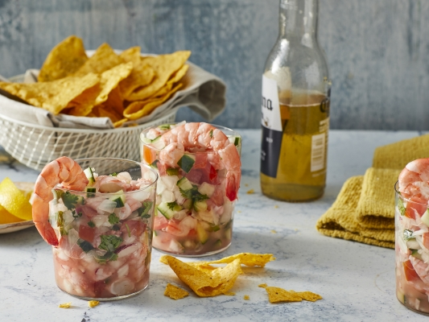

Ceviche

Description
A seafood dish where diced cubes of raw fish, marinated in a
lemon or lime juice mixture, react with citrus juices to cure
the fish protein and causes it to become opaque and firm
while absorbing flavor.
Ingredients
- 5 large lemons, juiced
- 1 pound jumbo shrimp, peeled and deveined
- 1/4 cup chopped fresh cilantro, or to taste
- tomato and clam juice cocktail
- 2 white onions, finely chopped
- 1 cucumber, peeled and finely chopped
- 1 large tomato, seeded and chopped
- 3 fresh jalapeno peppers, seeded and minced
- 1 bunch radishes, finely diced
- 2 cloves fresh garlic, minced
- tortilla chips
Steps
- Place shrimp in a bowl (You may either coarsely chop
the shrimp, or leave them whole, depending on your
preference.) Add lemon, covering shrimp completely. Cover,
and refrigerate for 30 minutes, or until opaque and slightly
firm.
- Add tomatoes, onions, cucumber, radishes, and garlic;
toss to combine. Gradually add cilantro and jalapenos to
desired taste (jalapeno will grow stronger while marinating).
Stir in tomato and clam juices to desired consistency. Cover,
and refrigerate for 1 hour. Serve chilled with tortilla chips.